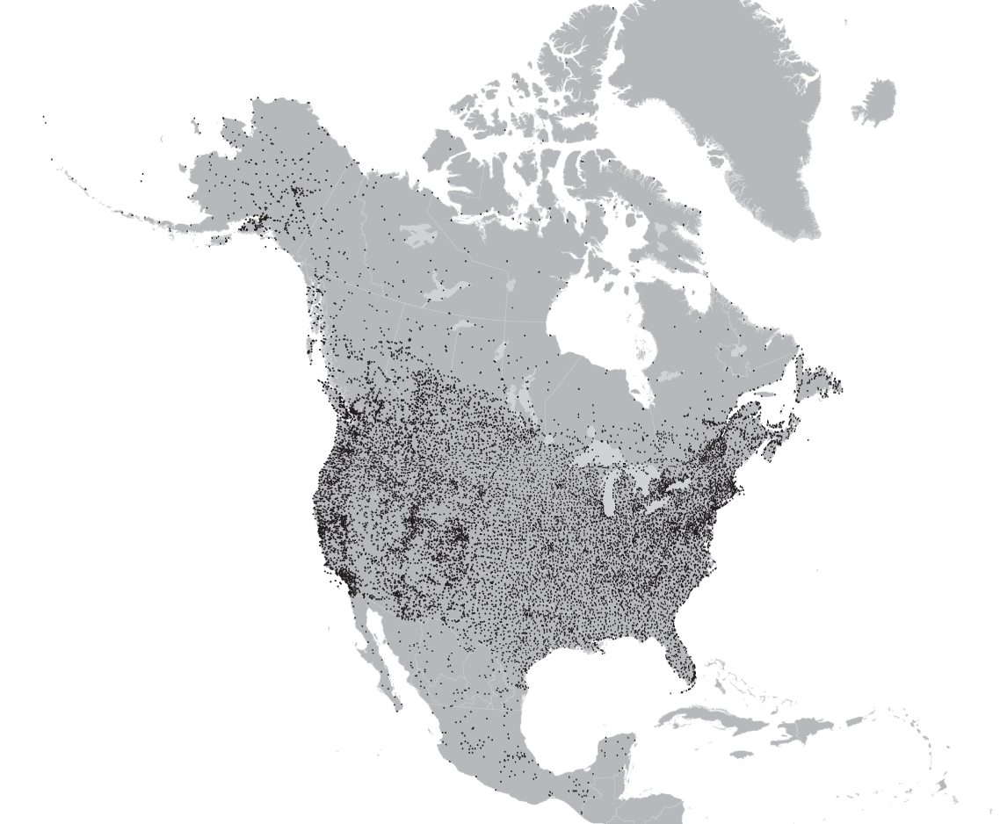

Canadian Gridded Climate Dataset - NRCANmet
Summary Description
The Canadian Gridded Climate Dataset (NRCANmet) is a high-resolution, station-based gridded climate dataset produced by Natural Resources Canada (NRCan) and Agriculture and Agri-Food Canada. It provides daily and monthly interpolated historical climate variables across Canada, utilizing the Australian National University Spline (ANUSPLIN) interpolation package. The dataset provides information continuous in time and space for climate research and environmental studies. A variation of the dataset is PCIC-Blend which combines NRCANmet with regional station interpolation datasets. PCIC-Blend was developed to improve the dataset over the complex mountainous terrain of Western Canada and the North-Eastern United States and is described in Werner et al. (2019). The latest version of NRCANmet covers all of North America and is described in MacDonald et al. (2020) and references therein.

Dataset Characteristics
- Current version: No official versioning, see Expert Guidance. The latest version was generated in 2022.
- Available variables: temperature & precipitation (see variables section below
- Temporal coverage: 1950–2020
- Temporal resolution: Daily and monthly
- Spatial coverage: Canadian landmass (The latest version covers Can & US, check when this will be on PAVICS and modify spatial coverage accordingly!)
- Spatial resolution: ~10 km grid spacing (0.083°)
- Data type: Quality-controlled station observations interpolated using ANUSPLIN
- Data format: netCDF, GeoTIFF
- Web references:
NRCANmet data descriptions are provided on the Northern Climate Data Report and Inventory (NCDRI) Web Site for temperature and precipitation. - Reference:
MacDonald et al. (2020) - Contact: Dan McKenney, NRCan
When to use NRCANmet
- When you need information about past climate.
- When you only need precipitation and/or near-surface temperature.
- When you need a spatially complete and temporally continuous gridded product.
- When the region of interest is well covered by in-situ measurements.
- When you need an observational dataset that is consistent with future climate projections available on ClimateData.ca.
Strengths and Limitations
Key Strengths of NRCANmet
| Strength | Description |
|---|---|
| Observation-based | The dataset is entirely based on quality controlled observed data. |
| High spatial resolution | Provides detailed climate information at ~10 km resolution. |
| Long-term coverage | Spans over six decades, enabling comprehensive climate trend analyses. |
| Reference dataset for ClimateData.ca | The ClimateData.ca portal uses the PCIC-Blend version of NRCANmet as the reference dataset for the bias correction of the underlying climate projection data. |
Key Limitations of NRCANmet
| Limitation | Description |
|---|---|
| Temporal inconsistency | Station availability and density varies over time, affecting data consistency over time. |
| Interpolation limitations | Accuracy depends on the density and distribution of input stations. |
| Artefacts in the data | The interpolation procedure occasionaly produces local artefacts of unrealistic values. |
| Lack of real-time updates | Dataset extends up to 2020, updates are irregular. |
| Limited variables | Focuses primarily on temperature and precipitation; other climate variables are not included. |
Expert Guidance
Variables available in NRCANmet
For details click on variable group to uncollapse
Data Access
NRCANmet gridded data is freely available upon contact with Dr. Dan McKenney, Canadian Forest Service, Natural Resources Canada, dan.mckenney@canada.ca
ToDo: Check: Can we put this link to the daily data on NRCan’S FTP - Check with NRCan!?
The dataset is also available on PAVICS. To avoid downloading very large datasets in their entirety PAVICS allows partial/regional extraction and provides a tutorial to do so, using the CaSR reanalysis as an example . With a free PAVICS user account, the Jupyter notebook with the Python code in the tutorial can be directly used on PAVICS.
Another option to obtain NRCANmet is from the website of the Pacific Climate Impacts Consortium. Note that this version covers only the time period 1950-2012.